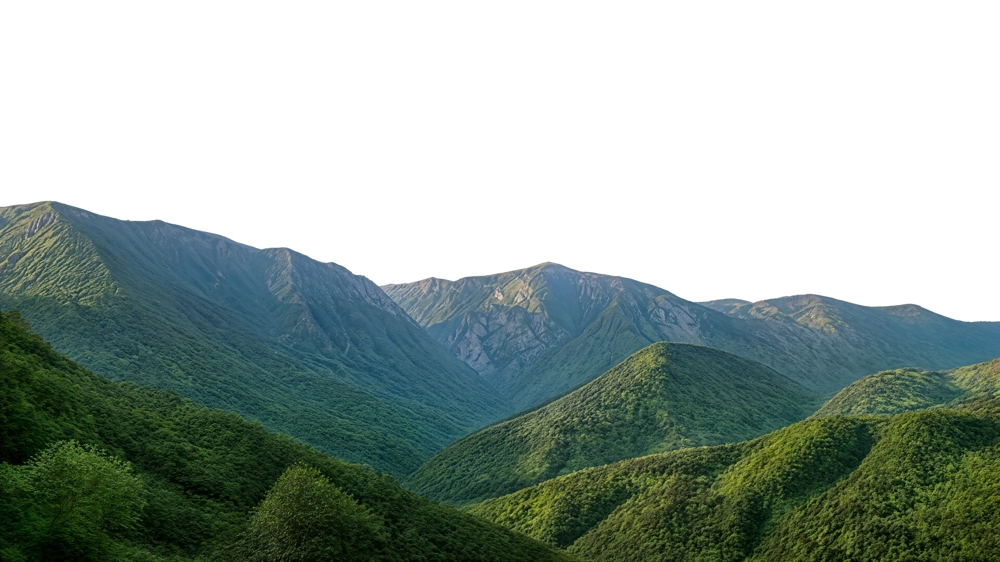
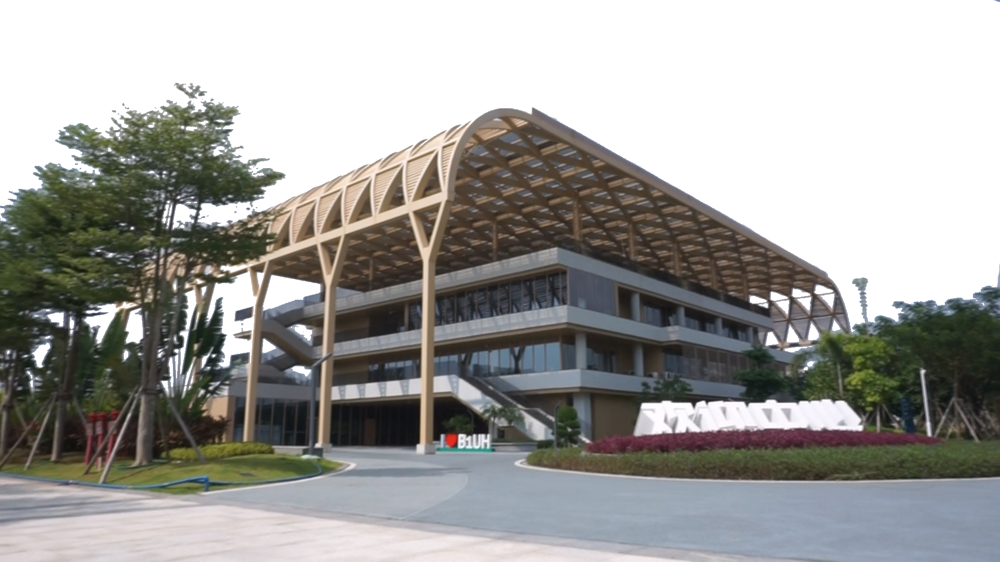
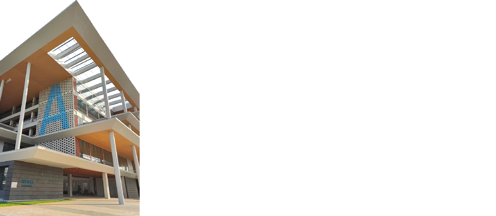
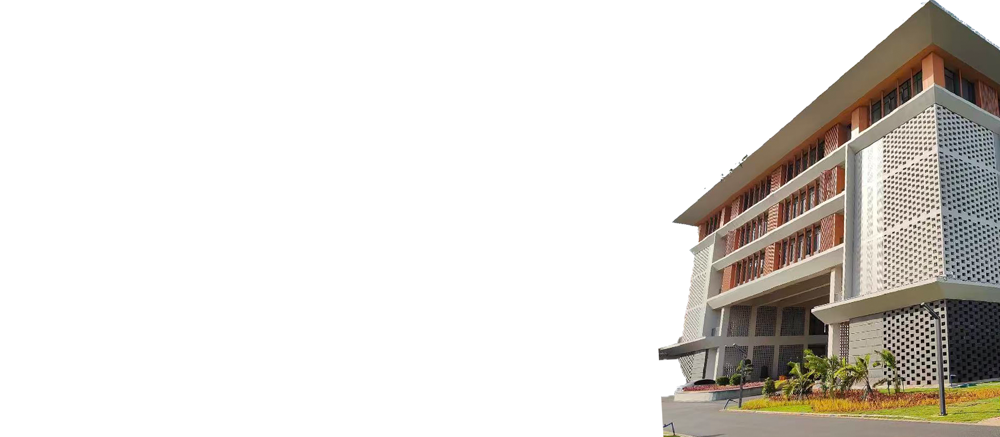
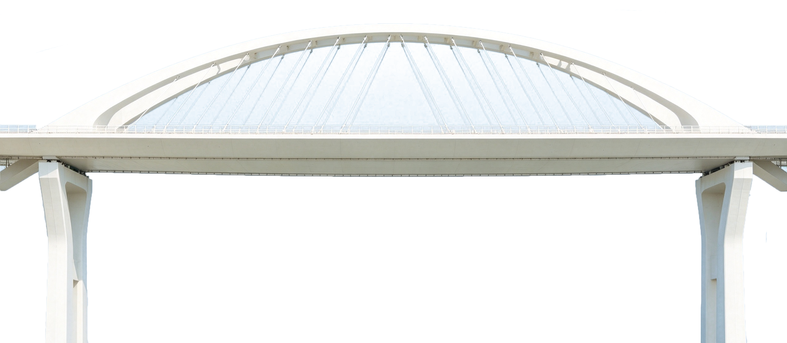
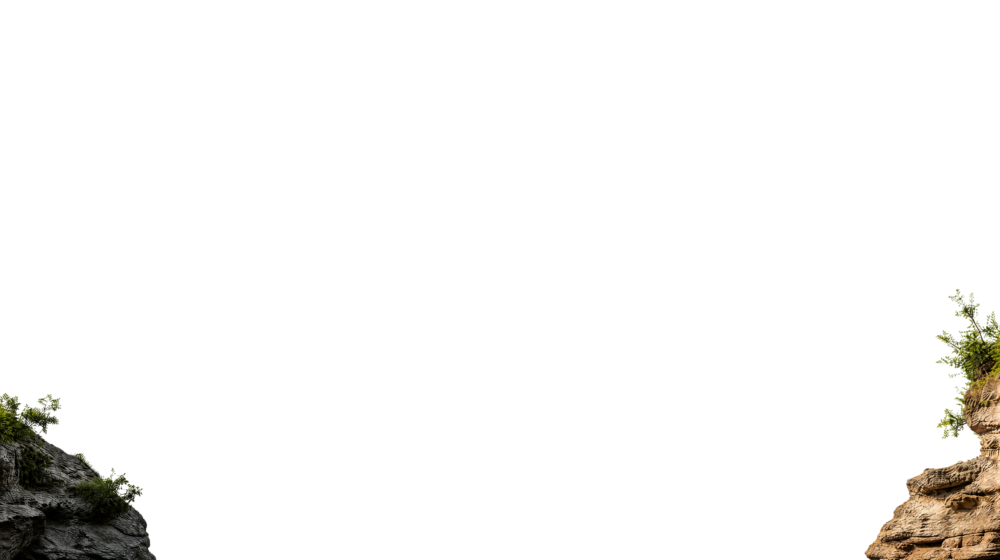

Stari Most
The stone arch over the Neretva and Mostar's main landmark.


The stone arch over the Neretva and Mostar's main landmark.

Copper shops, souvenirs, and the old bazaar lane by the bridge.

A classic minaret view back toward Stari Most and the river.
A preserved residential house showing Mostar's Ottoman layers.
A compact, moving stop for context on the city's recent history.





A stone arch, emerald water, and a compact old city made for slow mornings, late light, and one unforgettable crossing.
Stari Most links the banks of the Neretva and anchors a historic quarter shaped by Ottoman, Mediterranean, and European layers.
Stone lanes, mosque courtyards, copper stalls, and riverside coffee stay within a short walk of Stari Most.